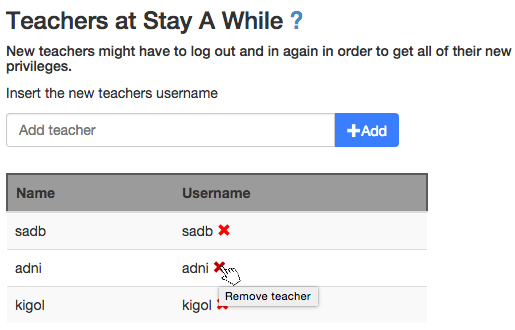

Help and FAQ
Administrators
Administrators are the supreme rulers of Stay A While, with privileges to perform just about anything.
Their primary purpose is adding new queues, and adding teachers for those queues.
Set server-message
To add a server-message, go to the Administration page. Then click the Set server-message button and enter a message in the window that opens up. Once you have entered your message, click the Set message button to save your message. A server-message will then be shown to every user currently connected to Stay A While as well as those that connect while the message is active. A server-message may be useful to forewarn users upon updating the service.
To remove a server-message, go to the Administration page. Then click the Set server-message button and then click the Remove message button on the window that opens up.
Add an administrator
To add an administrator, go to the Administration page. Then enter the name of the
user you wish to add as administrator in the field which says Add administrator and click Add.
The user should now show up in the list of administrators below the input field.
Note: New administrators will get their privileges after they refresh the page.
Remove an administrator
To remove an administrator, go to the Administration page. Then, under Administrators,
click the red cross beside the name of the administrator you wish to remove. The user should now
disappear from the administrator list. If not, please refresh the page. The administrator rights will be
removed from the user immediately.
Note: There must always be at least one administrator. It is therefore not possible to remove an
administrator if it is the last one remaining.
Add a queue
To add a new queue, go to the Administration page. Then enter the name of the
queue you wish to add in the field which says Add queue and click Add.
The queue should now show up in the list of queues below the input field.
To remove a queue, see Remove queue under Teacher.
Add or remove teachers and assistants
See Add a teacher or assistant and Remove a teacher or assistant under Teacher
Accessing statistics
See Statistics under Teacher.
Teacher
Teachers are in charge of specific queues. In addition to the privileges of an assistant,
they can also add and remove assistants as well as teachers from their queues and hide or remove the queue itself.
Add a teacher or assistant
To add a teacher or assistant for a queue, go to the Administration page.
Then choose the queue you wish to add a teacher or assistant for in the dropdown as below:

Once you have selected a queue, enter the name of the user you wish to add either in the
Add teacher or the Add assistant input fields, and click the Add button.
If done correctly, the user should now show up in the list under the given input field.
Remove a teacher or assistant
To remove a teacher or assistant from a queue, go to the Administration page.
Choose the queue you wish to remove a teacher or assistant from in the dropdown, the way you would when
adding a teacher. Click the red cross beside the user you
want to remove, as in the picture below.

Once the name in the list is gone, so are their privileges.
Hide a queue
Hiding a queue means both purging and hiding the queue.
This can be used for example when there will be no labs in a queue for a longer time.
To hide a queue, go to the Administration page.
Then go into the Select queue dropdown as you would adding a teacher or assistant, and click the Hide queue button that shows up upon selecting a queue.
Confirm in the popup that appears.
When you want to show the queue again, follow the same procedure and click the Reveal queue button which is now shown instead of the Hide queue button.
Removing a queue
Removing a queue means removing it from the system. There is no reversing this action and all privileges will be removed along with the queue.
To remove a queue, go to the Administration page.
Then go into the Select queue dropdown as you would adding a teacher or assistant, and click the Remove queue button that shows up upon selecting a queue.
Confirm in the popup that appears.
Note: If you wish to regain a removed queue, you will have to contact an administrator.
Statistics
Stay A While allows the teacher to access some information about how a queue has been used.
To access the statistics, first go to the Statistics page. Then go into the Select queue dropdown, and select the desired queue. Then enter a starting point and an end point. Once the desired time-period has been entered click, the Get statistics button and the information should be shown below.
Assistants
Queue assistants help with moderating specific queues. In addition to removing specific users,
they are also able to lock and purge queues, as well as sending messages and interact with the users in the queue.
Note: All the assistants privileges are located in the queue. You get there by choosing the right queue from the list of queues.
Kicking a user
To remove a queue position, first double-click the user you wish to remove and thereafter click the appering red button with a cross on it. Be careful when removing users from the queue, as this action can not be reverted.

Note: If you are accessing the service through a recognized smartphone device, you will only have to click once to show the option to kick a user.
Message a user
In order to send a message to a certain user in the queue, access the options as you would kicking a user, and click the blue button with an envelope on it. Enter a message in the window that opens up and click Send.
To send a message to everyone in the queue, see broadcast.
Help a user
By helping a user, you mark them using the green button with a checkmark accessed in the same way as you would access the button to kick someone.
When a user is receiving help, they will start pulsing, notifing any other assistant that they can move to the next person in the queue.
Bad location
If an assistant is unable to find a given user because they have entered a location that is not precise enough, the assistant has the option to mark the user for Bad location. Marking a user for bad location is done by clicking the yellow button with a question-mark on it. The button is found at the same place as the one used to kick a user.
The user will then receive a message prompting them to edit their location. The user will then have a red color until they have edited their location.
Completion
If a user presents a solution to an assistant but is failed and made to change some things about their assignment, the assistant can mark the user for completion.
Marking a user for completion is done by clicking the yellow button with a bookmark on it. The button is found at the same place as the one used to kick a user. Once the button is clicked, a window will open up allowing the assistant to add an optional comment about what the completion contains. When you are happy with the comment you click Submit to save it. Upon marking a user for completion, the user is automatically kicked from the queue. If a task was added by the assistant, it can be found by reading the messages about a user.
A user marked for completion will have a yellow color the next time they enter the queue with the intention of presenting.
Add message
An assistant can add a comment about a user in case they think that the next assistant to help that user should know something specific. A possible comment may be "I might have given them too much code".
To add a message about a user, click the yellow button with a tag-icon on it. The button is found at the same place as the one used to kick a user.
The message may then be read by reading the messages about a user as specified below.
Read messages
By double-clicking a user in the queue, the administrative options are shown. If the user has some messages connected to them, the magnifying glass to the right will show up in a blue color. If the magnifying glass is gray, that means that no messages exist about the user. Clicking the blue magnifying glass opens a window showing all the messages about the user.
Note: If you are accessing the service through a recognized smartphone device, you will only have to click once to show the option to kick a user.
Broadcast
If you want every user in the queue to know something you can user the ability to broadcast information.
Below the option to join the queue assistants will find a dropdown with administrative options. The first one being Broadcast.
Broadcasting is done by clicking the dropdown with administrative options and clicking Broadcast, this will open a window prompting the user to enter a message to broadcast. Once the message is entered, click the Broadcast button to send it.
Note: By using this function, everyone in the room will see the message. If you only want the assistants and teachers to see the message, use Broadcast faculty as described below.
Broadcast faculty
If you want every assistant and teacher in the given room you can user the ability to broadcast information to faculty.
Broadcasting to faculty is done by clicking the dropdown with administrative options and clicking Broadcast faculty, this will open a window prompting the user to enter a message to broadcast. Once the message is entered, click the Broadcast button to send it.
Note: By using this function, only assistants and teachers can see the message. If you want everyone in the queue to see the message, use Broadcast as described above.
Set MOTD
MOTD stands for Message Of The Day. If you want users to know something once they enter the room, you can set a MOTD. The MOTD will be shown to every user once they enter the room and may i.e. be used to let them know that you only accept presentations today.
You set the MOTD by clicking the dropdown with administrative options and clicking Set MOTD, this will open a window prompting the user to enter a message, as well as showing the current MOTD if there is one. Once the message is entered, click the Set MTOD button to save it.
In order to remove the MOTD, follow the same procedure, but click Remove MOTD on the window that opens up.
Note: If you want the user to see the information for a longer amount of time, use Set queue info described below.
Set queue info
Information that you wish to show the user continuously should be entered as queue info. The queue info is shown on the top of the screen if there is one and can only be removed by an assistant or teacher.
You set the queue info by clicking the dropdown with administrative options and clicking Set queue info, this will open a window prompting the user to enter some information. Once the message is entered, click the Set info button to save it.
In order to remove the info, follow the same procedure, but click Remove info on the window that opens up.
Note: If you only want the user to see the info once, when they enter the room, try using MOTD instead.
Purge a queue
When a queue is being purged, all people in the queue will be removed. Be careful though, as this action can not be reverted.
To purge a queue, start off by clicking the dropdown with administrative options and then clicking the Purge queue button. Confirm in the popup that appears.
Lock a queue
When a queue is locked, users can see the queue but not join it. When locking a queue, users already
in the queue will not be removed.
To lock a queue start off by clicking the dropdown with administrative options and clicking Lock queue. Confirm in the popup that appears.
To unlock a queue, perform the same procedure as above, but instead of choosing Lock, you choose Unlock.
Users
Join a queue
To join a queue, you will first need to find the queue (see Find a queue).
When you have found the queue, let's say you want to join the queue Allmänhandledning,
click the queue name.

You now reach the queue page, where all the queueing takes place. If you are at a KTH computer, your
location will be automatically obtained.

If your location is not automatically obtained, please type your location in the location field.
Now click the Join queue button, and you are done!
Note: On the queue list page, the queues you are currently queueing in become blue.
Leave a queue
To leave a queue, you must first join a queue. If you haven't joined the queue you want to leave,
we recommend you to not join that queue. If you have already joined the queue you want to leave,
go to the main page of the queue and click the Leave queue button.
Receiving help
Once you have joined a queue, you will notice that you are rewarded with a yellow button saying Receiving help, this button should be used if you are receiving help from an assistant who forgot to personally mark you as receiving help. If this is the case, click the button to prevent more assistants to come to you while you are receiving help.
Colors
When a person is standing in the queue, they may have different colored backgrounds, here are their respective description.
White and Gray
White and gray backgrounds indicates that the person is merely standing in the queueand the different colors are only used to make it easier to distinguish between the different rows.
Blue
If a preson has a blue star next to their name, that means it is you.
Pulsing
When you see a person that keeps pulsing, that indicates that they are currently receiving help from an assistant.
Note: We do realise that there is no specific color, do not be THAT person ...
Yellow
If you see a person with a yellow background color, that means that the person was previously given a completion and has now come back to present their solution.
Red
When a person has a red background color, that means that an assistant has told the person that they have to enter a more descriptive location so that the assistants can find the person.
Queue status
The queues in Stay A While can have different statuses, which can be good to know.
The statuses are indicated by the color and style of the queue name.
| Style |
Icon |
Description |
| Active queue |
|
The queue is active and can be joined |
| Locked queue |
|
The queue is locked and can't be joined |
Find a queue
The first step to queueing would be to find the queue you wish to join, right? So how is that done?
Well, first go to the Queues page. There you can either scroll to find the queue
you are searching for, or you could search for the queue. To scroll, just scroll - more info on
scrolling will not be covered in this help section.
To search for a queue, type the queue name (or parts of the queue name) in the box that looks like this:

Guests
You are not logged in. If you only want to view a queue, that's cool,
but to be able to join a queue, you will need to
log in.
Viewing a queue
If you don't want to log in, you can open up any queue and see the virtual line of eagerly
waiting people. This is done by clicking the name of the queue you want to look at in the
Queues page.
For example, if you want to look at the queue for Allmänhandledning,
you click like this: